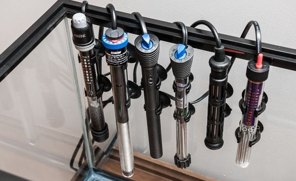
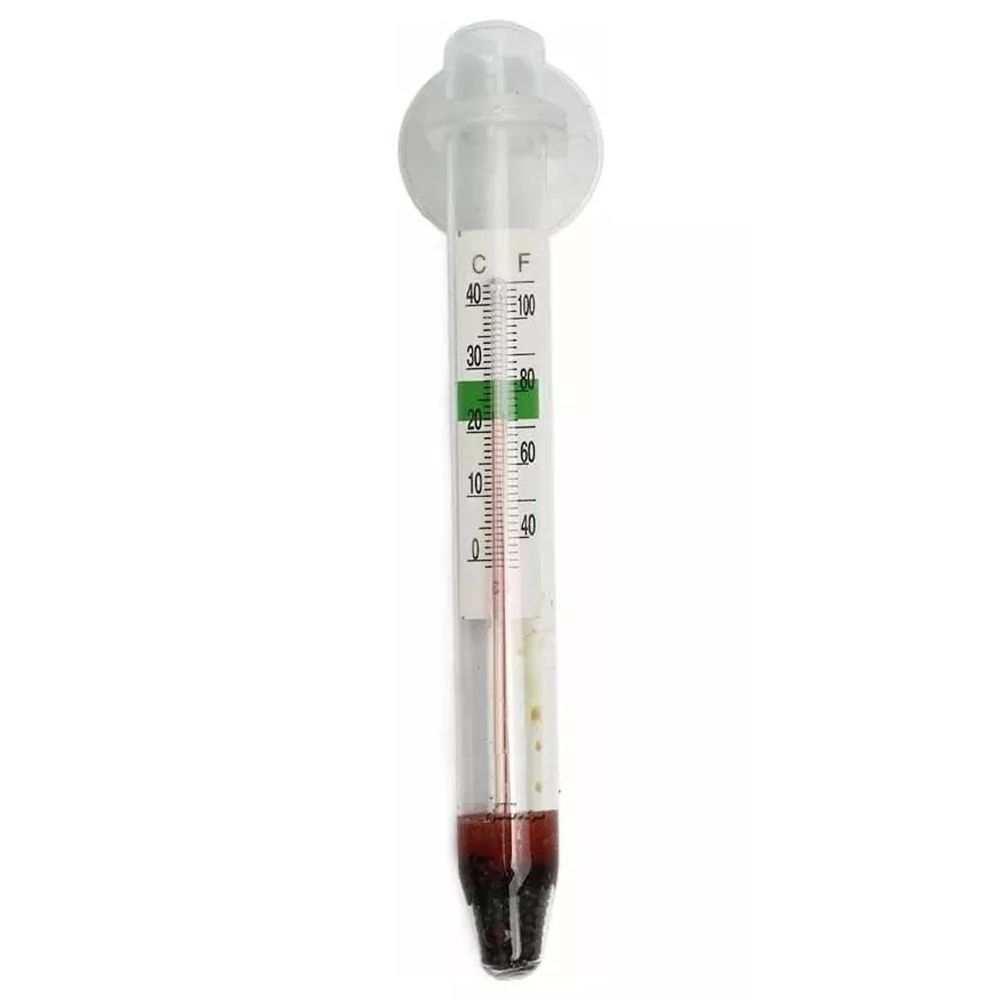
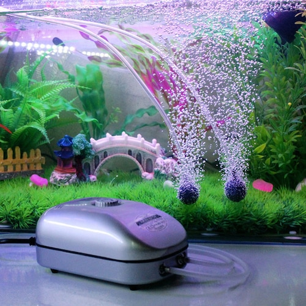
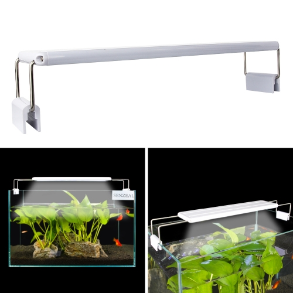
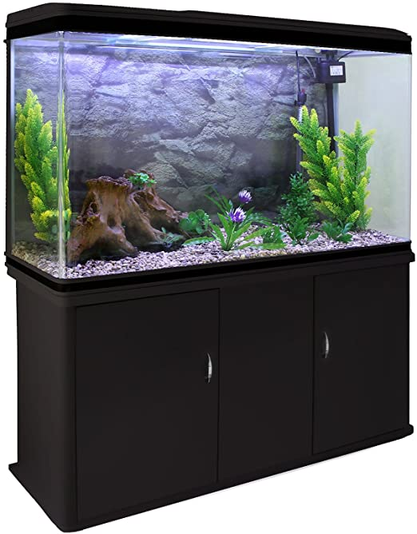
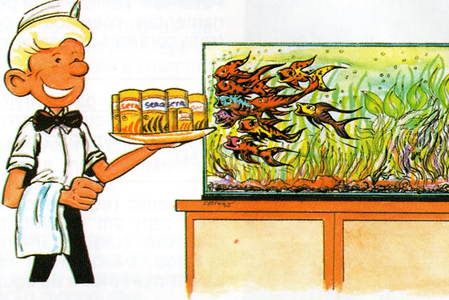
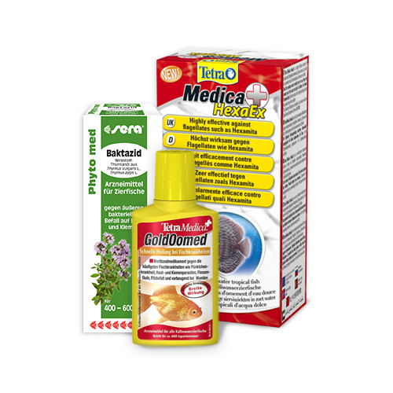

Outros componentes fundamentais num aquário de peixes tropicais:
Além dos referidos filtros nas outras páginas, há um conjunto de equipamentos fundamentais para assegurar a saúde da nossa fauna e flora.
Em baixo apresenta-se uma lista dos mais importantes:
Termostato
Indespensável em todos os aquários de àgua quente. Equipamento que serve para aquecer e manter a água a uma temperatura constante e adequada às espécies que habitam o nosso aquário
Termómetro
Equipamento indespensável e barato, serve para o responsável pelo aquário controlar alguma variação na temperatura. Às vezes, uma pequena variação pode ter efeitos perigosos na saúde dos peixes
Bomba de Ar
Equipamento que serve para libertar um fluxo de bolhas de ar na àgua do aquário e, deste modo, mantêm os níveis de oxigénio altos, contribuíndo para manter a saúde dos habitantes!
Luminária
A luz do aquário é muito importante uma vez que este equipamento vai afectar o comportamento dos peixes e crescimento e saúde das plantas.
Muita luz resulta em peixes com comportamentos fugidios, assustadiços e cores pálidas. Leva também ao aparecimento de algas nos vidros.
Por outro lado, luz a menos traduz-se muitas vezes em plantas com folhas amarelas e peixes com fraco.
Embora as lâmpadas flourescentes ainda estejam muito presentes no mercado, há cada vez mais soluções que utlizam LEDs e estás são a melhor opção para iluminar o aquário, uma vez que têm um baixo consumo energético e produzem uma luz semelhante à solar.
Móvel
O móvel do aquário tem de ter a resistência necessária para aguentar o peso do aquário cheio.
Além dessa função primordial, deve ter espaço de arrumação para os diversos acessórios, assim como o filtro e as diversas ligações eléctricas.
Hoje em dia há muitas opções com desenhos variados e, por isso, um móvel deve ser também esteticamente apelativo e, em conjunto com o aquário, funcionar como uma peça estética.
Alimentação
Cabe a nós providenciar a alimentação correcta à nossa fauna.
Na natureza os peixes encontram uma alimentação diversificada e que corresponde às necessidades de cada espécie. Num meio fechado é crucial que a comida supra as necessidades das várias espécies que são mantidas juntas, que na grande maioria dos casos nem habitam a mesma zona geográfica do planeta, e pata tal existe uma gama variada de produtos no mercado.
Existem soluções para vários tipos de peixes e é imprtante que a alimentação seja variada e um sinal inequívoco de problemas é sempre a falta de apetite.
Antes de adquirir um peixe é importante pesquisar a alimentação da espécie!
Medicamentos
Como todos os seres vivos, também os nossos peixes estão susceptíveis a doenças.
Desda causas virais, bacterianas ou até envenenamento devido a algum produto que tenha entrado na água, existem um conjunto de soluções específicas para cada problema.
O correcto diagnóstico da doença é essencial para o eficaz tratamento da mesma, mas é boa práctica ter sempre em reserva medicamentos para as doenças mais comunns.